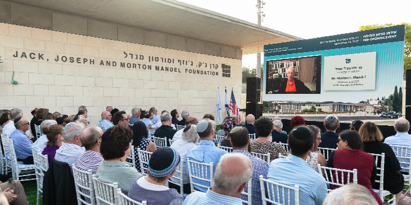

On September 19, 2019, the Mandel community gathered to mark the beginning of the final phase of construction of the Jack, Joseph and Morton Mandel Foundation's new building in Jerusalem and to commemorate the 98th birthday of Morton Mandel, Chairman and CEO of the Foundation. The ceremony took place in the presence of Professor Jehuda Reinharz, president of the Mandel Foundation; Steve Hoffman, vice chairman of the Foundation; Moshe Lion, Mayor of Jerusalem; Isaac Herzog, chairman of the Jewish Agency for Israel; and Moshe Vigdor, director general of the Mandel Foundation–Israel.
"What we see here is the realization of a vision – the vision of the founders of the Foundation," said Professor Reinharz, president of the Foundation. "This is where the Mandel School for Educational Leadership will operate, and alongside it will be the Mandel Leadership Institute, with its many varied programs," he continued. He then described the building's design principles, as formulated by Mr. Mandel. Foremost among them was the desire to have spaces that will facilitate natural encounters between faculty, lecturers, fellows, and graduates. These include a rotunda, which is designed to serve as a central meeting place, and an outdoor courtyard, where meetings can take place as well.
Morton Mandel, chairman and CEO of the Mandel Foundation, watched a live broadcast of the ceremony from his home in Florida and participated via video. Addressing the well-wishers assembled in Jerusalem with great excitement, he said: "This is going to be a magnificent building. It's hopefully going to do wonderful things for the people of Israel…. To sit here and see this is more than a dream come true. It's a tribute to the people with whom I grew up. To my father, to my mother." Mr. Mandel related that he and his two brothers, who predeceased him, always carried with them an awareness of the approval of their mother, who had taught them the importance of giving. "You know what I'm thinking when I'm sitting here?" he added emotionally, "Mom would have loved this." Following his words, the guests in attendance sang "Happy Birthday," in honor of his 98th birthday.
"This building will be one of the most important buildings in the city, in terms of the importance of the activities that will take place in it," said Jerusalem Mayor Moshe Lion. "We in Jerusalem are grateful to the Foundation and its leadership for its long-standing contribution in the areas of education, leadership, society, and the spirit of Jerusalem."
The official inauguration of the new building of the Jack, Joseph and Morton Mandel Foundation in Jerusalem is scheduled for May 2020.
{kind=link}